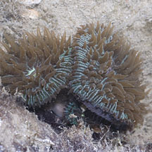
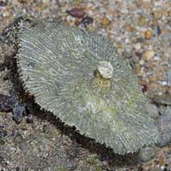
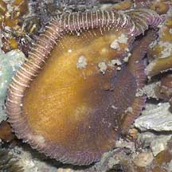

|
|
| hard corals text index | photo index |
| Phylum Cnidaria > Class Anthozoa > Subclass Zoantharia/Hexacorallia > Order Scleractinia |
| Mushroom
corals Family Fungiidae updated Nov 2019
Where seen? These hard corals that may be mushroom-shaped or long and tongue-like are sometimes seen on many of our Southern shores. In sheltered reefy lagoons, they can be quite plentiful. Often, mushroom corals of several different species are found together. On the Northern shores, they were only encountered on Beting Bronok. Most members of the Family Fungiidae are solitary corals that are free-living (i.e., lie unattached) as adults. The Family Fungiidae is restricted to the Indo-Pacific. Features: Unlike most other hard corals which are colonies of small polyps, most mushroom corals are a single giant polyp. Some species have a circular disk-like skeleton, others are long and tongue-like. Most have short tentacles, except for the Sunflower mushroom coral (Heliofungia actiniformis) that has such long tentacles that it is often mistaken for a sea anemone. Mushroom corals have variable colours, often the mouth is the most strikingly coloured. In some, the tissue around the mouth is banded. Their tentacles are often extended in daytime. According to Veron, the violet or bright pink patches seen on some mushroom hard corals are due to damage and injury. A young mushroom coral starts life attached to a surface, and looks like a tiny stalked mushroom. In many species, as the coral matures eventually breaks away from the stalk and lives life as an adult unattached to the bottom. In some, the older coral remains attached and the stalk is obscured by the growing disk. Free-living mushroom corals can move, though very slowly. They do this by inflating and deflating its tissues. While smaller ones may be able to right themselves should they be accidentally overturned, bigger ones will die if this happens to them. Please don't disturb the mushroom corals. What do they eat? Almost all mushroom corals harbour microscopic, single-celled symbiotic algae (zooxanthellae) within their bodies. The algae undergo photosynthesis to produce food from sunlight. The food produced is shared with the host, which in return provides the algae with shelter and minerals. It is believed this additional source of nutrients from the zooxanthellae help hard corals produce their hard skeletons and thus expand their size faster. Living on a mushroom: A mushroom coral is often home to different kinds of small animals from shrimps to barnacles and worms. Baby mushrooms: Some species of mushroom corals can reproduce by special asexual reproduction. A daughter colony (anthocauli) is formed when a part of the parent's skeleton loses its calcium (decalcification) resulting in clones that develop on the parent's body and become self-sufficient before detaching from the parent. Status and threats: The Sunflower mushroom coral (Heliofungia actiniformis) and some other mushroom corals are listed as threatened on the IUCN global listing. Like other creatures of the intertidal zone, all mushroom corals are affected by human activities such as reclamation and pollution. Trampling by careless visitors, and over-collection by hobbyists also have an impact on local populations. |
 Young mushroom corals start life attached to a hard surface on stalks. Tanah Merah, Jul 2011 |
 'Stalk' on underside of dead mushroom coral. Sisters Island, Aug 08 |
 Underside of a mushroom coral. St. John's Island, Jan 06 |
| Some Mushroom corals on Singapore shores |


| Family
Fungiidae recorded for Singapore from Danwei Huang, Karenne P. P. Tun, L. M Chou and Peter A. Todd. 30 Dec 2009. An inventory of zooxanthellate sclerectinian corals in Singapore including 33 new records. **the species found on many shores in Danwei's paper. in red are those listed as threatened on the IUCN global list.
|
|
Links
References
|